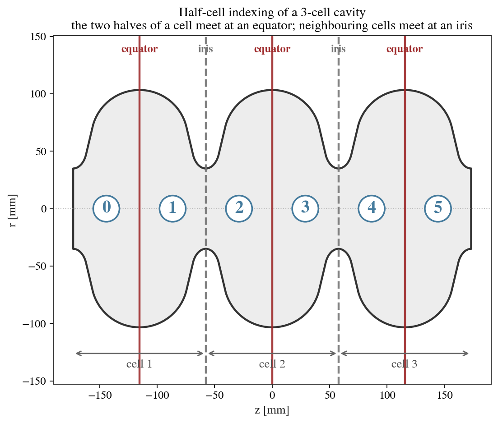
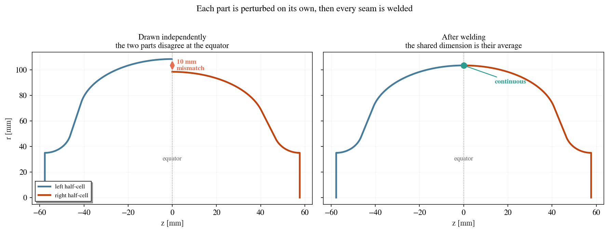
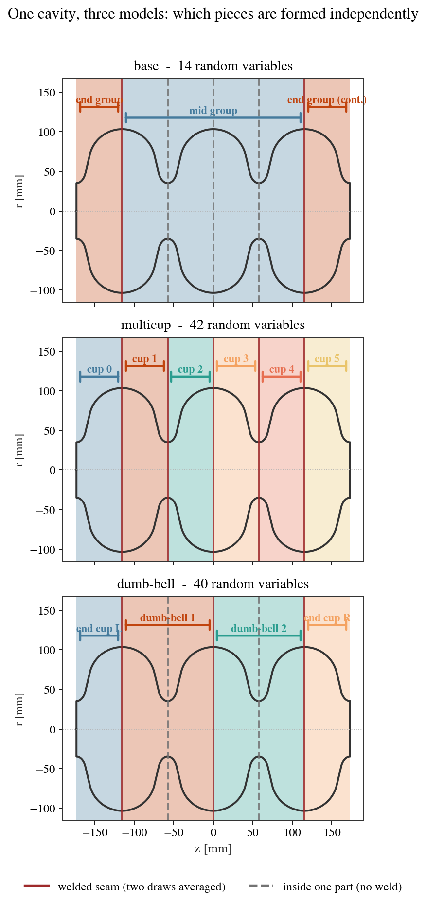
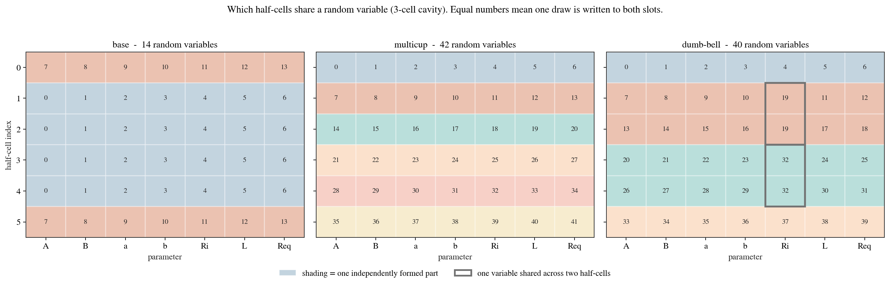

Uncertainty Quantification¶
The uncertainty quantification (UQ) module propagates fabrication tolerances and alignment errors through the solver chain to compute the statistical distribution (mean and standard deviation) of the RF figures of merit. This enables designers to assess how manufacturing variability impacts cavity performance before committing to a fabrication run.
Interface¶
UQ capabilities are integrated directly into existing analyses by nesting a uq_config sub-dictionary inside the solver configuration (e.g. inside eigenmode_config or wakefield_config):
uq_config = {
'variables': ['L', 'Req'],
'delta': [0.05, 0.05],
'method': ['Quadrature', 'Stroud3'],
'distribution': 'gaussian',
'cell_type': 'mid-cell',
'cell_complexity': 'simplecell'
}
eigenmode_config = {
'processes': 3,
'rerun': True,
'boundary_conditions': 'mm',
'uq_config': uq_config
}
cavs.run_eigenmode(eigenmode_config)
This runs the eigenmode solver at a set of perturbed geometry points (quadrature nodes) and aggregates the results into statistical moments.
Configuration Settings¶
variables(list of str) The geometric variables to perturb, e.g.
['L', 'Req']. Each variable corresponds to a dimension of the elliptical cell parameterisation (see Quickstart Tutorial for the parameter naming convention).delta(list of float) The perturbation magnitude for each variable (in mm). Interpreted as the standard deviation when
distributionis'gaussian', or the half-width whendistributionis'uniform'.method(list) The UQ evaluation method. The recommended default is
['Quadrature', 'Stroud3'], which uses Stroud’s third-order symmetric cubature rule. This minimises the number of simulation evaluations while capturing second-order statistical moments.distribution(str, default:
'gaussian') Probability distribution model:'gaussian'(normal) or'uniform'.cell_type(str, default:
'mid-cell') The type of cell to which the perturbation is applied.cell_complexity(str, default:
'simplecell') Determines whether perturbations are applied to a single cell ('simplecell') or the full multi-cell structure ('multicell', where every half-cell becomes an independent random variable subject to the equator/iris continuity constraints). Both are available for eigenmode and wakefield UQ.processes(int, default: 1) Number of parallel processes for evaluating the perturbed quadrature nodes.
Visualising Results¶
Once the UQ simulation finishes, the standard deviations are populated in the results database. You can compare the fundamental-mode quantities with error bars across different cavities:
cavs.eigenmode.plot_fm_bar(uq=True)
Important
Running UQ perturbations near degenerate geometries can lead to errors. For example, applying perturbations to a cavity with geometric dimensions close to physical constraints (like some reentrant cavity designs) may produce invalid or self-intersecting shapes. Use cav.inspect() to verify that the perturbation range defined by delta does not push the geometry beyond its valid limits.
See the worked examples in Advanced: UQ everywhere.
Choosing a perturbation model¶
A tolerance can be posed in more than one way, and the choice changes the answer. The models below are different descriptions of the manufacturing route, not coarse and fine versions of one description. None of them is established here as the correct description of a real cavity: that is an empirical question about fabrication data.
How a cavity is divided¶
cavsim2d indexes an elliptical cavity as 2n half-cells for n cells, ordered left
to right. Cell k is the pair (half_cells[2k], half_cells[2k+1]), so the two halves of
a cell meet at its equator, and neighbouring cells meet at an iris.

Fig. 1 The six half-cells of a 3-cell cavity. Equators lie inside a cell; irises lie between cells.¶
One consequence is worth stating, because it surprises people: the first cell is
end_l paired with a mid half, so Req_el and Req_m name the same physical
equator. They are not independent dimensions.
What welding does¶
Each part of a real cavity is formed on its own, so its dimensions carry their own error. Where two parts meet, the finished cavity has one dimension, not two. cavsim2d reproduces that: it perturbs every part independently and then welds each seam by averaging the two values that meet there.

Fig. 2 Left: two half-cells whose equator radius was drawn independently, so the profile does not close. Right: after welding, both carry the average and the profile is continuous.¶
Welding is not only a repair for a discontinuity. It reduces spread: averaging two independent draws of standard deviation \(\sigma\) gives one value of standard deviation \(\sigma/\sqrt{2}\). A model that welds a joint therefore predicts a narrower distribution than one that does not.
The three models¶
{kind=link}

Fig. 3 The same cavity under each model. Shading groups the half-cells that come from one independently formed part. A solid line is a welded seam, where two draws are averaged; a dashed line lies inside a single part, so nothing is averaged there.¶
The three models differ in how finely the cavity is divided, and therefore in how many seams are welds:
base has two parts, so only the two mid-to-end equators are welds.
multicup has one part per half-cell, so every equator and every iris is a weld.
dumb-bell has one part per dumb-bell, so the equators are welds but the irises are internal.

Fig. 4 Which half-cells share a random variable. Equal numbers mean one draw is written to both slots.¶
'base'One tolerance per cell type. Every mid half-cell shares a draw, and so do the two end half-cells, which gives 14 random variables whatever the cell count. When the two end cells are different designs they get their own variables, giving 21. This is what a drawing tolerance usually states.
'multicup'Every half-cell formed independently:
14nvariables for n cells. Both the irises and the equators are welds, and each averages two independent draws.'dumbbell'Dumb-bells formed as units, matching the usual assembly sequence. Each half keeps its own
A,B,a,b,LandReq, but the two halves of a dumb-bell share one iris radius, because that joint is machined rather than welded. That gives13n + 1variables, and leaves only the equators as welds.
Build a model with perturbation_slots(), which reads the
geometry to decide whether the end cells share a draw:
from cavsim2d import EllipticalCavity, perturbation_slots
cav = EllipticalCavity(3, MID, END_L, END_R, beampipe='both')
for kind in ('base', 'multicup', 'dumbbell'):
print(kind, len(perturbation_slots(cav, kind)))
Pass split_ends=True to give the two end cells their own variables even when they are
the same design. Use it when the two end cups are formed separately, so their errors are
independent rather than sharing one tooling error.
Two paths through the solver¶
uq_config reaches the geometry by one of two paths, and they differ in what they can
represent.
Simplecell path¶
The default. cell_complexity is 'simplecell', and the perturbation is applied to
the model’s own parameters (A_m, Req_el, and so on). It is the cheaper path and it
is enough when one tolerance per cell type is what you mean.
Caution
On this path the geometry builder forces Req = Req_m across the whole cavity, so
the Req_el and Req_er components of a perturbation are discarded. If you
include Req in variables with cell='all', then two of the random dimensions
do nothing, and a cubature rule is evaluated on fewer active dimensions than it was
built for. Use the multicell path when you want independent equator draws.
Multicell path¶
Set cell_complexity='multicell' and independent_half_cells=True. Every half-cell
carries its own parameters, the draws are independent, and each seam is welded afterwards
as shown above. This path is the one to use whenever parts are formed separately.
Which path supports which model:
Model |
Simplecell path |
Multicell path |
|---|---|---|
|
yes |
yes |
|
no |
yes |
|
no |
yes |
The simplecell path perturbs the model’s own parameters, and those name a cell type
rather than an individual part. It can therefore express base and nothing finer. Both
multicup and dumb-bell need per-half-cell parameters, so they need the multicell
path.
uq_config = {
'variables': ['A', 'B', 'a', 'b', 'Ri', 'L', 'Req'],
'delta': [0.3] * 7, # absolute tolerance, mm
'method': ['Normal', 500],
'cell_complexity': 'multicell',
'independent_half_cells': True,
'objectives': ['monopole:freq [MHz]', 'monopole:R/Q [Ohm]'],
'processes': 6,
}
cavs.run_eigenmode({'processes': 1, 'boundary_conditions': 'mm',
'uq_config': uq_config})
Comparing models and rules¶
plot_uq_comparison() draws several labelled UQ result sets
side by side, one panel per figure of merit. Give it uq.json paths, the directories
holding them, or loaded dictionaries:
from cavsim2d import plot_uq_comparison
plot_uq_comparison({'base': 'runs/base/uq', 'multicup': 'runs/multicup/uq'},
nominal=cav.eigenmode_qois)
The default view plots the mean with a \(\pm 1\sigma\) error bar. The bar is the spread of the ensemble, not the uncertainty of the estimate, which is smaller by \(\sqrt{N}\).
To compare spreads rather than centres, pass kind='sd', which puts the standard
deviation on the axis, optionally as a ratio against a named result set:
plot_uq_comparison({'MC': 'runs/mc/uq', 'Stroud3': 'runs/s3/uq'},
kind='sd', reference='MC')
A difference of 20% in standard deviation is hard to see as a difference in error-bar
length, so use kind='sd' when the question is whether two methods agree on the
spread. uq_comparison_table() returns the same numbers as a
DataFrame.